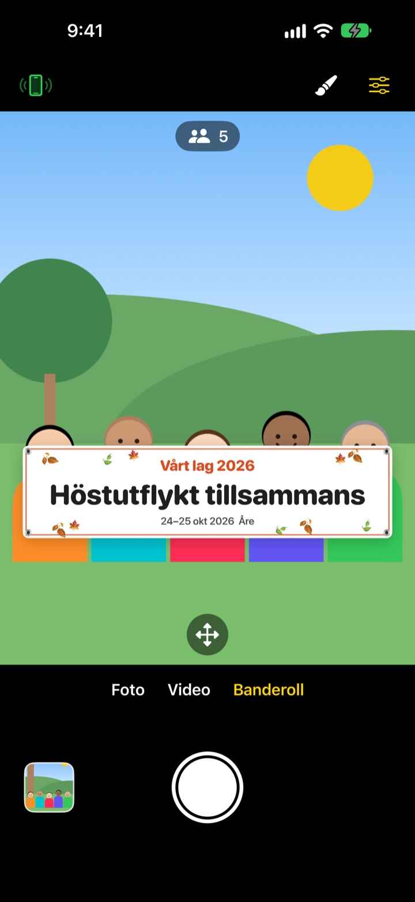
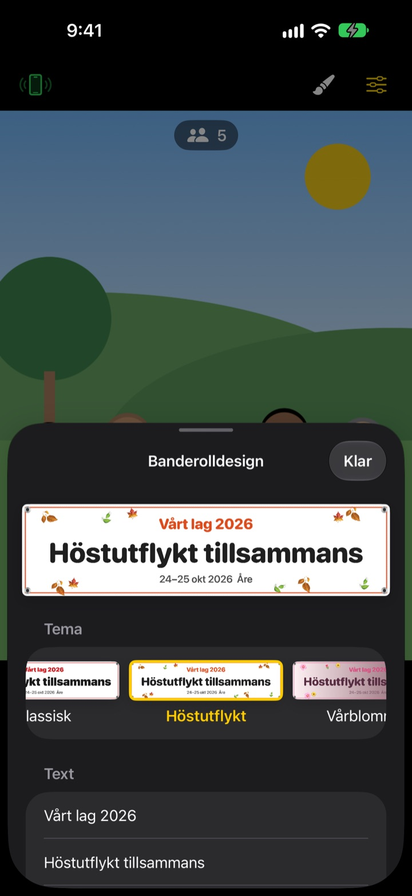

Gruppbilden med banderoll.
Utan att trycka någon.
Skriv texten, välj ett tema och banderollen står precis framför gänget. En väns iPhone blir fjärrkontroll med en QR-skanning, så även den som fotar kommer med på bilden.
Alla funktioner är gratis. Kräver iOS 17 eller senare.

Gör en banderoll
Ändra texten och tryck på ett tema. Tryck på slutaren så räknar den ner tre sekunder, precis som i appen.
Beställer du en banderoll för en enda bild?
Du beställer den, släpar med den på utflykten och sedan vet ingen var den ska förvaras. Och eftersom ingen är kvar att ta bilden saknas alltid någon. ShutterLink sätter banderollen i kamerabilden och gör en väns iPhone till fjärrkontroll, så att alla kommer med på bilden med banderollen.
Rätt banderoll på en minut
Välj bland 13 teman som höstutflykt, vårblommor, julfest, födelsedag, idrottsdag, examen, bröllop och företagsworkshop, och skriv upp till tre rader egen text.
Byt bakgrund, typsnitt, dekorationer, färger och format, och lägg till din logga. Välj tyg, vinyl eller papper: En tygbanderoll hänger, skrynklas och fladdrar i vinden som en riktig.

Fjärrkontroll utan installation
Tryck på fjärrkontrollknappen uppe till vänster så visas en QR-kod. Din vän skannar den med Kamera-appen, och ShutterLink Remote öppnas direkt som App Clip och ansluter.
I livebilden på fjärrkontrollen syns till och med banderollen, så du komponerar bilden och trycker. Varje bild hamnar direkt på iPhonen som är fjärrkontroll, så en vän utan appen kan spara och dela den på plats.
Tre steg för att komma igång
- 1
Ställ upp iPhonen
Öppna ShutterLink och ställ iPhonen på ett stativ eller en hylla.
- 2
Placera banderollen
Välj Banderoll längst ner, ställ in text och tema med penseln och tryck på golvet där gänget ska stå.
- 3
Lyft handen
Lyft handflatan eller tryck på slutaren på fjärrkontrollen. Självutlösaren räknar ner och tar bilden.
Gjort för gruppbilder
- Handflatsgest · klapputlösare
- Lyft en öppen hand mot kameran eller klappa högt en gång för att starta självutlösaren
- Leendeutlösare
- Tar bilden själv när alla ler med öppna ögon
- Självutlösare 3 · 5 · 10 · 20 · 30 s
- En röst räknar ner, blixten blinkar i takt och fjärrkontrollen vibrerar i handen
- Be alla titta in i kameran
- Tryck så ropar kamera-iPhonen högt så att alla tittar in i linsen
- Serie med 3 · 5 bilder
- Väljer den bästa bilden där alla har öppna ögon. Du kan byta till en annan i galleriet
- Antal personer · kanter · vattenpass
- Räknar personerna i bilden, varnar när någon står vid kanten och visar ett vattenpass när telefonen lutar
- Intervall från 3 s till 1 min
- Fånga en solnedgång eller ett projekt som växer fram med jämna mellanrum
- Kamerareglage
- Fokus och exponering med ett tryck, exponeringskompensation, blixt, rutnät, zoom från 0,5x upp till 10x beroende på modell, fram- och bakkamera, video
- Enkelt läge
- Fjärrkontrollen visar bara en stor slutarknapp som alla klarar av
- Volymknappar · Kamerareglage
- Ta bilden direkt på kamera-iPhonen, utan fjärrkontroll
I banderolläget går det inte att använda blixt, serietagning, zoom eller framkameran. Självutlösare, handflatsutlösare och fjärrkontroll fungerar som vanligt.
Alla funktioner är gratis
Gratis
- Banderolläge med 13 teman
- Fjärrkontroll utan installation (App Clip)
- Utlösare med handflata, klapp och leende, plus självutlösare
- Bästa bilden, personräkning och vattenpass
- Video och intervallfotografering
Ge dricks (frivilligt)
- Skicka liten, mellan eller stor dricks från Inställningar
- Dricks låser inte upp eller spärrar något
Ingen prenumeration. Du betalar en gång, bara när du ger dricks.
Inga annonser och inget konto.
Vanliga frågor
Vad behöver jag?
Installera ShutterLink på iPhonen som tar bilden (iOS 17 eller senare). På iPhonen som är fjärrkontroll behöver inget installeras, den behöver bara internet första gången App Clip-appen öppnas. Ha Bluetooth på i båda och håll dem nära varandra, oftast inom 10 m.
Jag skannar QR-koden men App Clip-appen öppnas inte.
Kontrollera att iPhonen som är fjärrkontroll är ansluten till internet. Du kan också skriva in kamera-iPhonens fyrsiffriga kod i ShutterLink Remote och trycka på Anslut. Kontrollera även att App Clips inte är blockerade under Inställningar › Skärmtid › Innehålls- och integritetsbegränsningar.
Den fastnar på ”Söker efter kameran …”.
ShutterLink måste vara öppen på skärmen på kamera-iPhonen. Kontrollera att Bluetooth är på under Inställningar › Bluetooth på båda telefonerna. Koden ändras varje gång appen öppnas, så om du har öppnat den igen använder du den nya QR-koden eller koden och trycker på Försök igen.
Jag ser ”Bluetooth-behörighet nekad”.
Slå på ShutterLink under Inställningar › Integritet och säkerhet › Bluetooth. Fjärrkontrollen är en App Clip och kanske inte syns i listan. Skanna i så fall QR-koden igen och tryck på Tillåt när du får frågan.
Livebilden hackar eller är suddig.
Livebilden är medvetet förminskad så att den kan skickas via Bluetooth. Bilder och videor sparas i kamera-iPhonens fulla kvalitet. Väggar, människor eller avstånd kan ge hack, men slutaren och övriga reglage fungerar ändå.
Var hamnar mina bilder?
I Bilder på kamera-iPhonen och i appens galleri. Fjärrkontrollen får också en kopia men sparar den inte själv, så spara eller dela den innan du stänger fjärrkontrollen. Om inget hamnar i Bilder, ge ShutterLink åtkomst under Inställningar › Integritet och säkerhet › Bilder.
Mina videor har inget ljud.
Slå på ShutterLink under Inställningar › Integritet och säkerhet › Mikrofon.
Kan jag ansluta flera fjärrkontroller?
Ja. Flera iPhones kan ansluta samtidigt med samma QR-kod eller kod, och alla utlöser samma kamera.
Anslutningen bryts medan jag fotar.
ShutterLink håller skärmen tänd så länge appen är öppen. Om du låser telefonen med sidoknappen eller byter app bryts anslutningen, så håll appen på skärmen medan du fotar.
Laddas mina bilder upp någonstans?
Nej. De två iPhonerna ansluter direkt via Bluetooth, och bilder och videor finns bara kvar på kamera-iPhonen och den anslutna fjärrkontrollen. Det fungerar även på fjället eller stranden utan täckning, och du behöver inget konto.
Fortfarande inte löst, eller hittat en bugg? Skriv till leeo@kakao.com. Ange modell och iOS-version för båda iPhonerna så går det snabbare att titta på det.